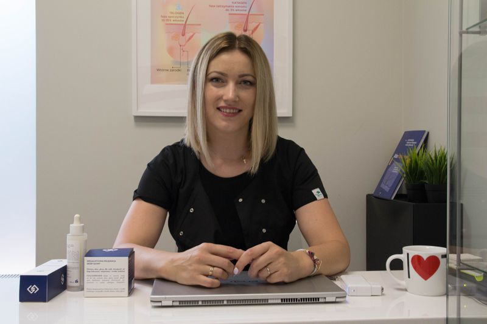
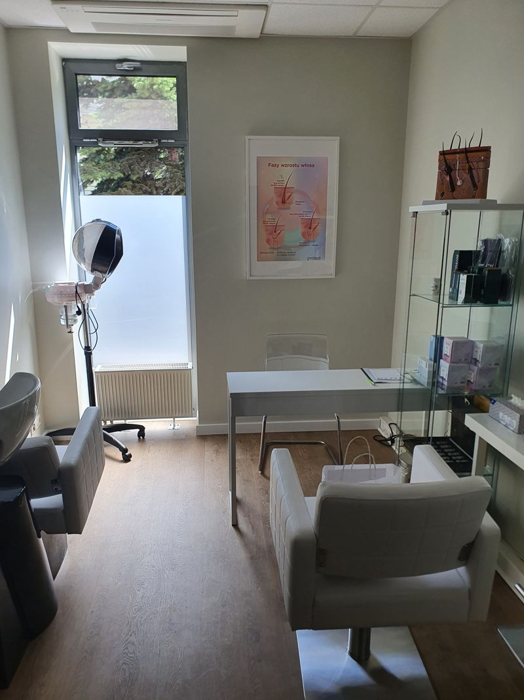

Trycholog Urszula Pacierz
Jestem absolwentką studiów wyższych na kierunku Trychologia Kosmetyczno-Lecznicza w Wyższej Szkołe Nauk o Zdrowiu w Łodzi. Na bieżąco poszerzam zakres wiedzy trychologicznej uczestnicząc w licznych szkoleniach dotyczących najczęściej pojawiających się problemów skóry głowy. Dzięki uzyskanej wiedzy i umiejętnościom z zakresu diagnostyki skóry głowy i włosów mogę przeprowadzić kompleksową konsultację trychologiczną. Podejście holistyczne to dla mnie bardzo ważna sprawa, ponieważ problemy skóry głowy i utrata włosów to objaw a przyczyna najczęściej leży gdzie indziej, dlatego każdy klient otrzymuje indywidualny program kuracji dostosowany do jego problemu. Pracuję na dermokosmetykach renomowanych firm opartych na naturalnych ekstraktach roślinnych bez szkodliwej chemii. Posiadam również profesjonalny sprzęt zabiegowy co w połączeniu daje bardzo dobre efekty.
Mój gabinet, to moja pasja do pielęgnacji włosów. Znajdziecie tu nie tylko zabiegi trychologiczne na skórę głowy ale także na łodygę włosa. Zajmuję się regeneracją i odbudową włosów zniszczonych. Pomagam dobrać odpowiednią i świadomą pielęgnację dzięki której Twoje włosy będą zdrowe i mocne. Serdecznie zapraszam.